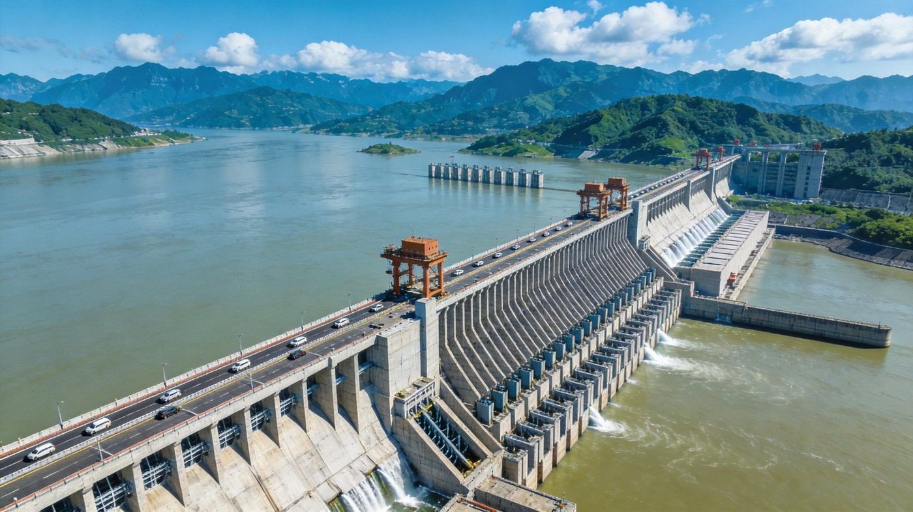
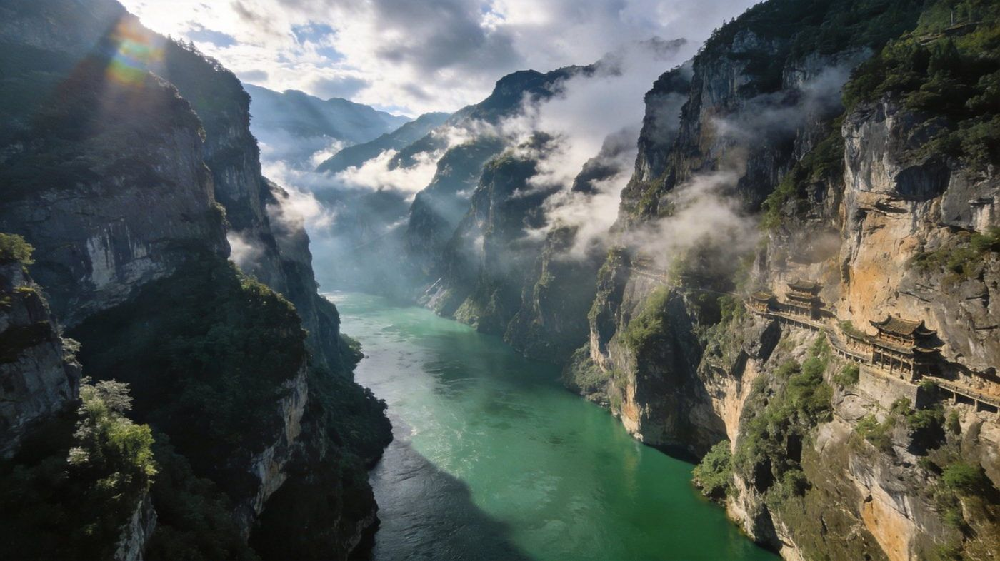

先分清：宜昌有两个坝
葛洲坝 · "长江第一坝"
在宜昌市西陵区，长江三峡出口处紧邻市区，1970年代施工、1981年通航发电，是长江干流第一座大型水电站。游览核心体验是坐船过它的船闸，感受水位升降。离市区最近，进坝门槛最低。
📍 宜昌市区边 · 可当日往返 · 偏"城景"三峡大坝 · "世界第一坝"
在宜昌市夷陵区三斗坪镇，比葛洲坝再往上游约38公里，是当今世界最大的水利枢纽。游览核心是坛子岭360°俯瞰、185平台近距大坝、截流纪念园。需实名预约 + 身份证 + 景区观光车换乘。
📍 宜昌夷陵区 · 需预约换乘 · 偏"大国工程""两坝一峡" = 三峡大坝 + 葛洲坝 + 中间的西陵峡，三者都在宜昌市域内。"两坝一峡"游船从宜昌市区三峡游客中心出发，先过葛洲坝船闸、再穿西陵峡、抵三峡大坝下游的三斗坪码头。
三种玩法，按需切换
玩法一 · 宜昌市区 + 周边游
不折腾"进坝/预约/船闸"，主打城景人文与市郊近景，适合时间紧张、带老人小孩、或只想轻松过周末的人。
行程建议 · 预留 2 天
景滨江公园 + 镇江阁沿江散步看江景 → 西坝岛隔江看市区 → 宜昌博物馆（长江/巴楚文化，免费）→ 傍晚CBD/万达商圈吃肥鱼火锅。
景近郊二选一：磨基山（市郊看三峡城市天际线全景）或 车溪民俗 / 下牢溪（地道田园溪谷，市区打车或公交可达）；想添一道江湖景可加宜昌三峡人家一日（需多留大半天）。
| 项目 | 参考预算（元/人，2天） |
|---|---|
| 市区文博/公园 | 大多免费，个别20–40 |
| 市内交通（公交/打车） | 约 60–120 |
| 住宿（市区2晚） | 300–600 |
| 正餐+小吃 | 约 250–400 |
| 合计 | 约 700–1200 |
⚠️ 安全要求
- 市区均平坦规范，主要注意江边观景不要翻越护栏，下雨湿滑。
- 去磨基山/下牢溪注意山路台阶与蚊虫，穿防滑鞋。
🧳 准备工作
- 基本不用预约；宜昌博物馆带身份证。
- 轻装出行，夏防暑、春秋带薄外套；GPS定位或在线地图即可。
玩法二 · 自驾游
自由度最高，能去只有自驾/包车才顺路的非核心点，还能把 G348 三峡地质公路当风景本身。适合会开车、爱自由组合、2-4人结伴。
行程建议 · 预留 3-4 天
景自驾抵宜昌东/机场取车 → 下午三峡大坝（导航至坝区换乘中心，预约+身份证+观光车）→ 夜宿坝区民宿或市区。
景三峡人家（导航至王家坪停车场，可坐索道/观光梯）全天土家风情；或改三峡大瀑布穿瀑。
景清江画廊乘船游碧水青山 + 武落钟离山；时间富余加秭归屈原故里。
景沿 G348 地质公路慢行回市区，逛滨江/西坝后还车返程。
| 项目 | 参考预算（元/人，3-4天） |
|---|---|
| 租车费（含油/过路，4人摊） | 人均 350–650 |
| 景区门票（大坝/人家/清江） | 约 350–500 |
| 住宿3晚 | 450–800 |
| 餐饮 | 400–650 |
| 合计 | 约 1600–2600 |
⚠️ 安全要求
- 山区道路多弯、部分临崖：G348及进景区的山路限速、连续弯道多，雨雾天更需谨慎，切勿弯道超车。
- 雨季防落石/塌方：关注当地天气预报与路况，预警天气别冒险进山。
- 务必系安全带；进坝区、景区均需在换乘中心停车换乘，私家车不能直接开进大坝核心区。
- 夜间少走陌生山路，优先市区/镇区住宿。
🧳 准备工作
- 提前实名预约三峡大坝（官方/门票平台）+ 带身份证；各 5A 景区建议订票。
- 检查车况（胎压/刹车/备胎）；带手机支架导航 + 离线地图（山里信号不稳）。
- 备现金零钱、雨具、防滑徒步鞋、饮用水与简单干粮。
- 提前了解各景区换乘/停车指引与闭园时间，别卡点赶末班。
玩法三 · 乘船游
最经典的看三峡方式：游船视野最佳、体验船闸"水涨船高"、不用自己开车换乘。短线走"两坝一峡"，长线走"三峡游轮"（宜昌↔重庆）连玩上游峡段。
行程建议 · 短线1天 / 长线4-5天
船两坝一峡：约8:30三峡游客中心登船 → 过葛洲坝船闸 → 游西陵峡 → 12:30三斗坪码头 → 下午三峡大坝（坛子岭/185/截流园）→ 环线返程。可加旗舰版过三峡升船机。
船三峡游轮航线：从宜昌往上游连玩秭归屈原故里 → 巫山巫峡 · 小三峡 → 奉节瞿塘峡 · 白帝城；宜昌→重庆约5天、重庆→宜昌约4天，一线串起三峡精华。
| 项目 | 参考预算（元/人） |
|---|---|
| 两坝一峡船+大坝套票 | 80–320（游船等级不同） |
| 两坝一峡游玩1天 | 合计约 500–900 |
| 三峡游轮（4-5天，含船宿餐饮） | 2000–4000（按舱位） |
| 合计 | 短线 500–900 / 长线 2000–4500 |
⚠️ 安全要求
- 全程实名购票，登船携带身份证；按乘务指引穿救生衣、听安全说明。
- 甲板观景抓稳栏杆、别靠边探身，过闸、弯道时勿在甲板奔跑。
- 易晕船者提前备晕船药，江上风大备防风外套。
- 遵守游船出发/返回时间，别单独脱团赶不上船。
🧳 准备工作
- 旺季务必提前线上订票，不买现场黄牛；提前确认出发码头与集合时间（约需提前30-45分钟登船）。
- 三峡大坝需另行实名预约 + 身份证；游轮需提前办登船手续。
- 备防水袋/相机套（甲板水雾）、防晒、充电宝。
- 了解退改规则与天气改期政策；长线游轮提前订舱位。



沿线景点 · 适合哪种玩法
滨江公园 · 镇江阁
宜昌城市名片沿江景，免费，步行可逛，半天零负担。
西坝岛 · 宜昌博物馆
隔江看城景 + 长江/巴楚人文，室内免费，适合雨天。
磨基山 / 下牢溪 / 车溪
市郊近景，看城市天际线或田园溪谷，打车/自驾最省心。
三峡人家
吊脚楼 + 土家风情出片圣地，自驾直达王家坪，约1天。
清江画廊
碧水青山如屏，自驾+景区游船，近秭归可连玩，半天-1天。
三峡大瀑布
穿瀑水帘，上午水量足，自驾或包车较顺，约半天。
葛洲坝 · 西陵峡
两坝一峡游船串联，过船闸+绝版峡谷全程精华，约半天。
三峡大坝
坛子岭/185/截流园，船到三斗坪换车+机票环节，约半天。
上游：秭归→巫峡→瞿塘峡
长线游轮连玩：屈原故里、巫山小三峡、奉节白帝城。
宜昌吃什么
💡 三种方式通用提示
- 进三峡大坝无论哪种方式都要实名预约 + 身份证 + 景区观光车换乘。
- 旺季（节假日/暑期）两坝一峡游船、各5A门票都要提前线上预订，别现场找黄牛。
- 先想清自己要"进坝/坐船"还是"只看城景"，再选玩法——市区周边玩法不必预约大坝，最省心。
- 三峡天气多变，出行前查预报；雨季山区自驾留意落石与路面湿滑。